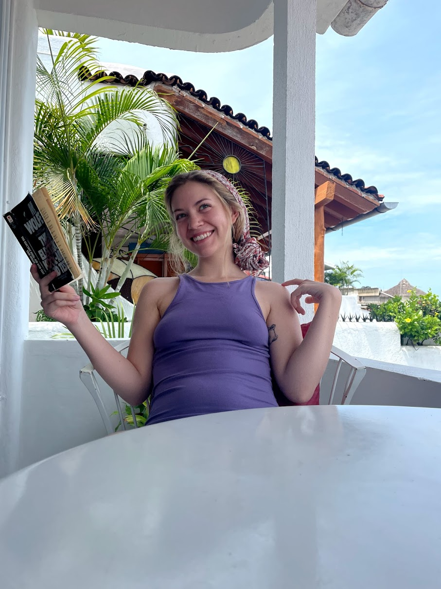

You're the love of my life and best friend forever <3

Jewel, on her penthouse porch in Mexico, studying communist propaganda - part of her life-long war on capitalism.
Here's a timeline of Bug Bijou's life:
- 2002 - Spawns in from the womb near Grand Junction, Colorado on June 14th, the same birthday as Daddy Trump.
- 2004 - Poo poo and pee peed alone for the first time.
- 2010 - Deep in the midst of belieberism, Jewel was busy belting Baby! Baby! Baby! Oooooo!
- 2013 - The dawn of emo-ism. Jewel was gripped by the shitty vocals of 21 pilots and the hardcore punk band The Front Bottoms.
- 2016 - Cast as the crtitical role of The Milky White in Shel Silverstein's Oz. Her performance inspired many characters in horror films and childrens tales. Some say this role defines Bijou and could be her magnum opus.
- 2019 - Elected as head of the Ecological Protection and Restoration club. This postition would launch her to a seat on the UNFCCC, if she chose to accept. But, love had other plans...
- 2020 - April 5th, 2020. A fateful bitter cold night. Her life would never be the same after lying on that dewey grass and kissing that weeeiiirrrd man.
- 2021 - Moves to Reno, Nevada to begin her life as a student of the arts. Quickly discovers Reno is an armpit.
- 2022 - Transfers studies to Durango, Colorado. A quaint mountain town known as a black hole by the locals. Her trend-setting tattoo career found it's roots in the depths of her 526sq ft apartment.
- 2023 - Conquers the world. She became America's best rookie of the year tattoo artist and went viral on instagram for her multitude of artistic displays. Some of which include: Crocheting, drawing, tattooing, designing, being beautiful, dressing all-cute-like, making amazing dinners, and being the best girlfriend in the entire world.
- The Future - San Diego? Probably. New Zealand? Most definitely. Marriage? It's Everyday Bro! Another kitty? Maybe at some point. Bug Bijou's tattoo shop? Most certainly.
"Bijou's life and achievement are testimony to the far-reaching contribution that one bug's towering intellect, persistence and artistic vision can make to human peace and progress."
-- Assistant Handyman and former Mici Team Lead James Marsh